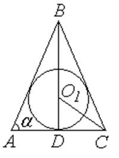

П19.1 №24
Величина угла при основании равнобедренного треугольника
равна  . При каком значении отношение длины радиуса вписанной в
данный треугольник окружности к длине радиуса описанной окружности будет наибольшим?
. При каком значении отношение длины радиуса вписанной в
данный треугольник окружности к длине радиуса описанной окружности будет наибольшим?
. При каком значении отношение длины радиуса вписанной в
данный треугольник окружности к длине радиуса описанной окружности будет наибольшим?РЕШЕНИЕ:
По условию ,
, .
Обозначим ,
.
В  и ,
и ,
 по теореме синусов для .
по теореме синусов для .
и ,
по теореме синусов для .Введем функцию
;
;
при или ,
что не удовлетворяет условию, , , ,
.
В точке функция
имеет максимум
|
|
 |
||
 |
0
|
 |
|
 |
|||
 |
|||
Отношение будет
наибольшим и равным  при .
при .
при .